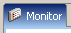
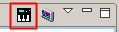
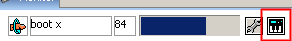
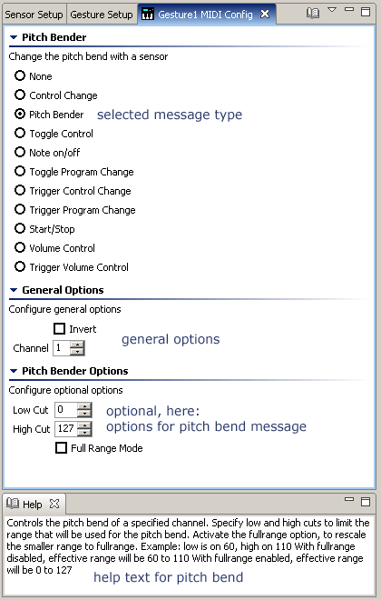
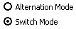
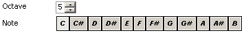

MIDI Configuration
I What is MIDI?
MIDI (Musical Instrument Digital Interface) is the data communications system that enables
music equipment, computers, and software from many different manufacturers to exchange
information. MIDI was introduced in 1983, but is today still the standard for exchanging information
between digital music equipments (Keyboards, PCs ...)
The information exchanged between two MIDI devices is musical in nature. MIDI information tells
a synthesizer, in its most basic mode, when to start and stop playing a specific note.
Other information shared includes the volume and modulation of the note.
MIDI information can also be more hardware specific. It can tell a synthesizer to change sounds,
master volume, modulation devices, and even how to receive information.
MIDI information can also be sent to indicate the starting and stopping points of a song or the
metric position within a song.
Advanced MIDI applications are using the interface between computers and synthesizers to edit
and store sound information for the synthesizer on the computer.
II "Midify" your sensors
Every JGlove source can be used to sent MIDI messages. This is the way to "midify" your source.
-
Select the Monitor (  ).
-
Set global MIDI on, by clicking the "MIDI" icon (  ) in the toolbar of the monitor.
-
Click the "MIDI" icon of one source display to configure the MIDI configuration
of a source ( sensor, gesture, mouse ).

-
Now you see the MIDI Configuration:

Image: MIDI Configuration Example
-
In the next step, you should adjust the general options.
- Invert
Activate this option to invert the sensor value that is used for triggering or send in a MIDI
message. For example value 0 will transformed into value 127.
- Channel
You can choose a channel from the range of 1 to 16. The midi message will be sent on
this channel.
-
Adjust the individual MIDI option parameters.
Help on the options is available in the Help view ( ).
You find 4 types of options:
-
Spinner
A spinner is used to select a value between a certain range, in most cases between 0 and 127.
You can either enter the number you want directly or press one of the two small buttons:
The one pointing upwards will increase the value, the one pointing downwars will decrease the
value. The longer you press one of the buttons, the faster the increase or decrease is performed.
-
Toggle
A toggle is used to set a value on or off. Click the checkbox or the text beneath it
to change its state.
-
Alternatives

For options with a few different possible selections there are radio checkboxes.
You can choose one of them by clicking the circle or the text beneath it.
-
Note

To choose a note you select the octave via the spinner and the note in the octave
via the buttons, ranging from 'C' to 'B'.
An octave of 5 and a 'C' is a C-5 or, in MIDI terms, the value 60.
III MIDI Messages
A description of each MIDI message type and its options is integrated into the application:
Just open the Help view by clicking the help icon in the MIDI config toolbar
( ).
As long as the help view is open, descriptions explaining all elements that you select inside the
MIDI config view are shown there.